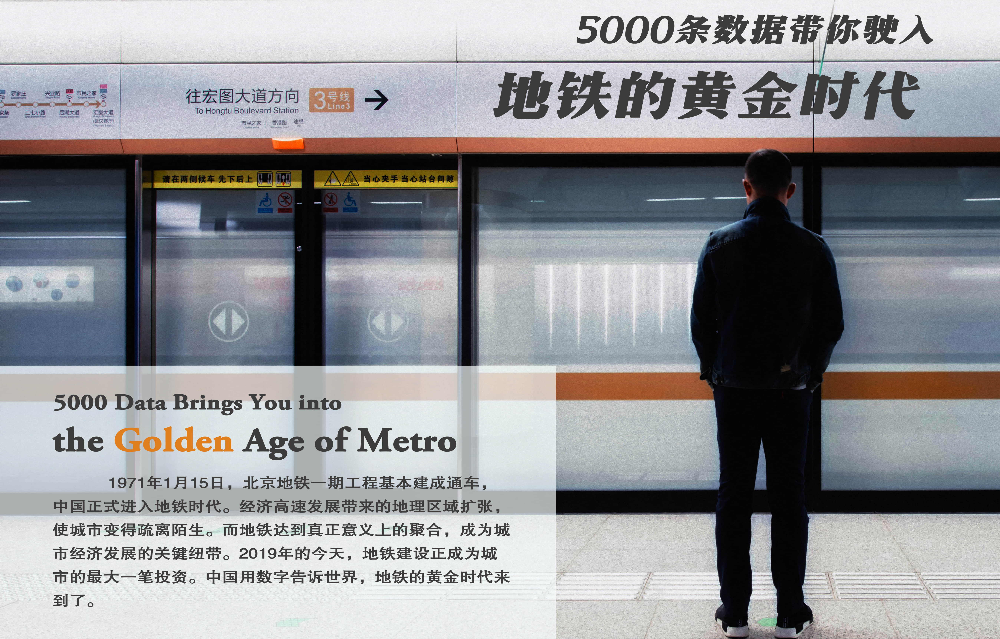
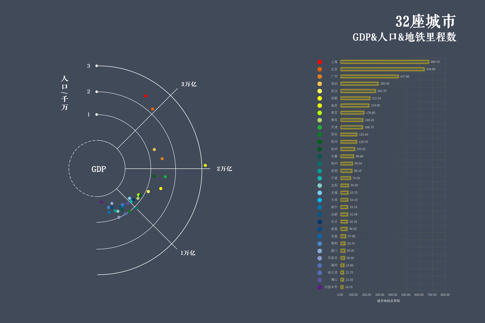
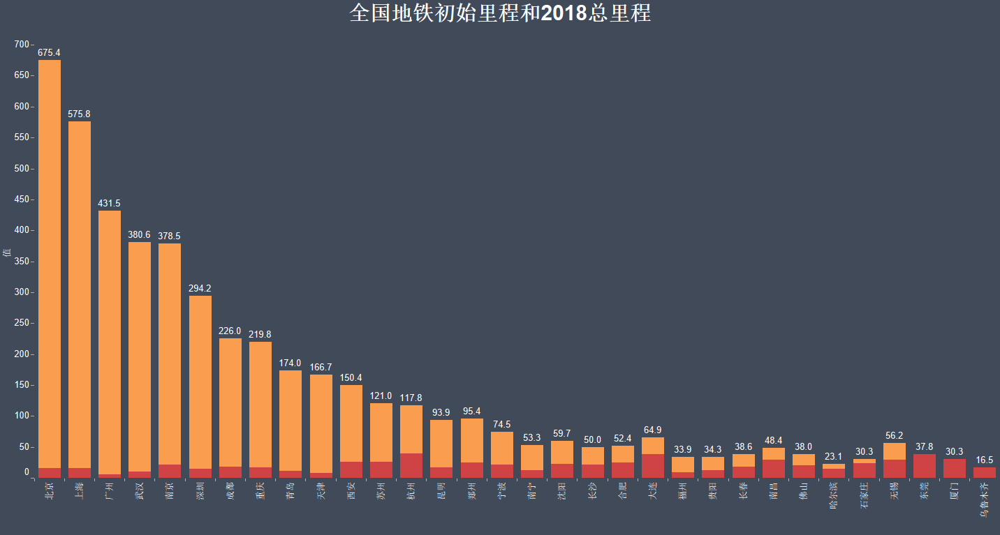
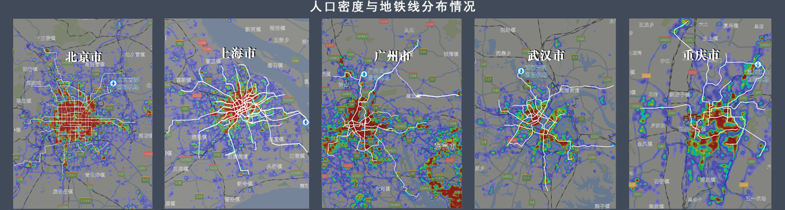
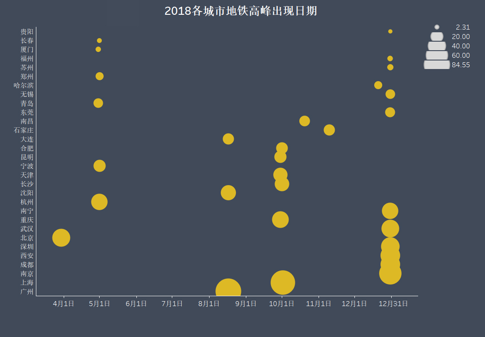
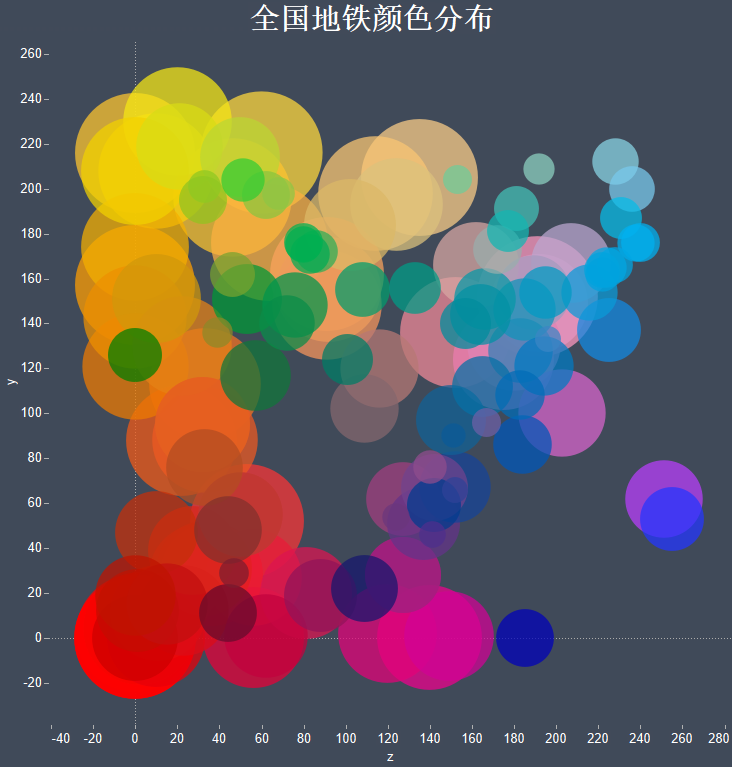

图片来源于网络
“如果有机会的话，我想一直留在武汉。”小陈对我们说，“我觉得这是一座有魄力的城市。我刚来那会儿，武汉堵得很，光谷更是人挤人。但现在好多了啊，想去哪儿，坐个地铁，绝对不超过一小时，还冬暖夏凉的。”
小陈是武汉轨道交通二号线光谷站的施工队队长，90后。来武汉三年多，他从一个“外来人”变成一个操着熟练“汉普”的“江城人”，对这座城从陌生到充满期待。由于工作原因，他可能随时离开武汉，去别的城市“挖地道”。2018年底，他跟单位申请继续留在武汉。“因为武汉也需要我，还有七八条线路等着我们挖噻。武汉这个发展劲头，蛮有板眼。”
武汉于小陈，不仅是长江的广博包容，更是地下通道里的飞驰迅猛。他为地铁而来，因地铁而留，由地铁而热爱。日日夜夜里，地铁与这座城，成为他工作中，也成为无数人生活中不可或缺的陪伴。
类似的事情还发生在首都北京。尽管北京是全国开通地铁最早的城市，人们仍对她的地铁发展充满了憧憬。在2018年底北京8号线三期试运营的铁路上，47年前就尝到过地铁“鲜味”的北京人，依旧兴奋地拿起手机 ，透过玻璃窗拍摄飞驰而过的风景。
如果城市是一个人，那纵横交错的交通设施就是他的骨架，而隐藏在地下的轨道，则是他的筋脉，畅血流气，释放城市活力。在中国百万级人口的城市里，地铁建设正成为史上最大一笔投资，它激发着人们的国际化大都会想象力和商业想象力，它令一个对城市陌生疏离的人对他重新向往。地铁黄金时代的大门，正在缓缓开启。
小陈是武汉轨道交通二号线光谷站的施工队队长，90后。来武汉三年多，他从一个“外来人”变成一个操着熟练“汉普”的“江城人”，对这座城从陌生到充满期待。由于工作原因，他可能随时离开武汉，去别的城市“挖地道”。2018年底，他跟单位申请继续留在武汉。“因为武汉也需要我，还有七八条线路等着我们挖噻。武汉这个发展劲头，蛮有板眼。”
武汉于小陈，不仅是长江的广博包容，更是地下通道里的飞驰迅猛。他为地铁而来，因地铁而留，由地铁而热爱。日日夜夜里，地铁与这座城，成为他工作中，也成为无数人生活中不可或缺的陪伴。
类似的事情还发生在首都北京。尽管北京是全国开通地铁最早的城市，人们仍对她的地铁发展充满了憧憬。在2018年底北京8号线三期试运营的铁路上，47年前就尝到过地铁“鲜味”的北京人，依旧兴奋地拿起手机 ，透过玻璃窗拍摄飞驰而过的风景。
如果城市是一个人，那纵横交错的交通设施就是他的骨架，而隐藏在地下的轨道，则是他的筋脉，畅血流气，释放城市活力。在中国百万级人口的城市里，地铁建设正成为史上最大一笔投资，它激发着人们的国际化大都会想象力和商业想象力，它令一个对城市陌生疏离的人对他重新向往。地铁黄金时代的大门，正在缓缓开启。
从1971到2018，城市“筋脉”飞速蔓延
放眼全国，截至2018年12月31日，我国内地开通地铁的城市达到32个（本文所涉及城市，不包含中国港澳台地区），投入运营的线路有137条，运营总里程达4530.93公里。纵览中国各区域，华东地区拥有着最多的地铁线路，北京牵头的华北地区次之，华南地区也正以不可小觑的势头超赶，而西部地区地铁线路较少，仅西安和乌鲁木齐两座省会城市拥有地铁。
注：圆圈大小代表中国大陆各城市地铁总里程数比例，图示所显示数据为该城市的地理纬度
当我们把目光聚焦城市，会惊讶于他们的运营里程。上海作为国际化大都市，拥有669.5公里的地铁里程，车站数高达339座；而北京、广州分别以636.8公里和437.9公里的运营里程紧随其后。

通过对比还可以清楚地发现，地铁线里程数与城市的经济实力有着密不可分的关系。位居城市GDP榜单top3的北京、上海、广州同样占据了运营里程和地铁线路数榜单的前三位，对比两个榜单，城市GDP的排名顺序与城市地铁里程中的排名相差无几。

如果说经济发展是城市轨道交通建设的燃料包，那么市民的出行需求则是地铁建设的催化剂。以西安市为例，西安的城市GDP仅有杭州的60%，却拥有着比杭州多了近20公里的地铁里程，这背后是多出20万人口的出行刚需。对于“人的城镇化”，舒适的出行必不可少，即使目前大多已经开通的城市轨道交通都面临着比地面交通更为“拥挤”的尴尬，地铁、轻轨等出行方式仍被视为更绿色、更高效的代表。“第一次坐7号线的时候，我才真正体会到了地铁出行的‘酸爽’。相比在2号线挤成‘肉饼’，我更愿意先公交再地铁来享受7号线的宽松舒适！”谈起前不久开通的武汉地铁7号线，大学生罗俊充满了欣喜。新修轨道疏散了城市中心的交通压力，解开了终年不散的“疙瘩”，更驱散了人们对“地铁同样拥挤”的积怨。
农业化时代，谁拥有土地谁就拥有财富；工业化时代，机械工具彻底改变了整个世界； 信息化时代，时效性、综合性、竞争性、开放性等时代特性让最快抓住信息的人成为王者。对于城市来说也是如此。处在信息化时代的洪流中，越来越多的城市日夜赶超，反映在城市轨道交通建设上，就是一种发乎内心的追逐——老百姓的期望，拉动经济发展的机会，以及城市综合竞争力的加权。经济和人口两架马车并驾齐驱，催赶着城市疾速延伸自己的“筋脉”，内陆32座城市从初建地铁到2018年，运营里程飞速增长。北上广三座一线城市在几十年间，一脚踩上地铁快车道，翻了无数个“筋斗云”，地铁里程数的增长了几十倍。南京、重庆、武汉三个长江沿线的二线大城市地铁运营里程也已经突破了300公里。随着我国地铁技术的逐渐成熟，后发城市一开始就铆足了劲儿追赶，初始里程排在前三位的东莞、杭州和厦门虽然在2012年及以后才建成自己的第一条地铁，却拥有着比北京多出两倍的初始里程。他们在中国地铁黄金时代中顺流而上，站在巨人的肩膀上飞速编织自己的“筋脉”。
农业化时代，谁拥有土地谁就拥有财富；工业化时代，机械工具彻底改变了整个世界； 信息化时代，时效性、综合性、竞争性、开放性等时代特性让最快抓住信息的人成为王者。对于城市来说也是如此。处在信息化时代的洪流中，越来越多的城市日夜赶超，反映在城市轨道交通建设上，就是一种发乎内心的追逐——老百姓的期望，拉动经济发展的机会，以及城市综合竞争力的加权。经济和人口两架马车并驾齐驱，催赶着城市疾速延伸自己的“筋脉”，内陆32座城市从初建地铁到2018年，运营里程飞速增长。北上广三座一线城市在几十年间，一脚踩上地铁快车道，翻了无数个“筋斗云”，地铁里程数的增长了几十倍。南京、重庆、武汉三个长江沿线的二线大城市地铁运营里程也已经突破了300公里。随着我国地铁技术的逐渐成熟，后发城市一开始就铆足了劲儿追赶，初始里程排在前三位的东莞、杭州和厦门虽然在2012年及以后才建成自己的第一条地铁，却拥有着比北京多出两倍的初始里程。他们在中国地铁黄金时代中顺流而上，站在巨人的肩膀上飞速编织自己的“筋脉”。

注：图为从1971年到2018年12月31日，中国城市的地铁线路数变化及城市排名
沿着时间的脉络往回看，中国地铁史上出现了许多“奇怪”事件：2001年天津地铁“消失”，2008年北京地铁线数飞涨。服务于城市的流动“地下城”，总是随着城市变化的浪潮泛起层层涟漪。自1984年天津地铁运营以来，由于建设标准较低、通车仅限于新华路到天津西站的7.4公里，一直无法起到分流地面人流的作用。据新华社报道，近几年，随着城市公交快速发展，天津地铁客流更是大幅下降，目前日均乘客仅1万人。与此相应，天津地面交通日益紧张。据此，天津在2001年暂停地铁运营，在老地铁的基础上延建，仅在7.4公里区间内运行的尴尬将成为历史。2008年，北京举办奥运会，为了迎接世界各地的国际友人，北京新修建成3条地铁，“地下城”里各色皮肤的人流编织出别样的风采。
1965-1975年，中国用了10年实现了地铁的0到1；2008年至2018年，同样用了10年，中国地铁增加了117条。从中国第一条地铁建成往后推30年，中国有12座城市建成了地铁；从2011-2018年的7年间，中国又有20座城市建成了地铁。12和20的飞跃，是30年与7年中国经济实力的对比。
最新数据显示，世界城市地铁长度排名中，上海、北京、广州霸占前三位。值得一提的是，广州是在2018年超越伦敦，取代了其世界第三的位置。前20名中，中国就占据了7席。中国用数字告诉世界：中国地铁的黄金时代，已经到来。
1965-1975年，中国用了10年实现了地铁的0到1；2008年至2018年，同样用了10年，中国地铁增加了117条。从中国第一条地铁建成往后推30年，中国有12座城市建成了地铁；从2011-2018年的7年间，中国又有20座城市建成了地铁。12和20的飞跃，是30年与7年中国经济实力的对比。
最新数据显示，世界城市地铁长度排名中，上海、北京、广州霸占前三位。值得一提的是，广州是在2018年超越伦敦，取代了其世界第三的位置。前20名中，中国就占据了7席。中国用数字告诉世界：中国地铁的黄金时代，已经到来。
从衣食到住行，地铁融入城市人的生活
城市经济发展加快了地铁蔓延的速度，地铁的建设同样反哺孕育他的城市，渗透进人们生活的衣食住行。
地铁按下了城市发展加速键，同时改变了城市的格局。它从时间和空间上缩短了区域距离，也就拓宽了城市发展的空间。“地铁修到哪里，我就敢买到哪里。”很多在大城市里为了圆购房置业梦的人们，一边勒紧腰带攒钱，一边盯着城市轨道交通的脉络，谋划着每一个可能参与进去的购房机遇。在上世纪90年代初一部电影叫《梅陇镇》中，梅陇镇这个偏远清净的小镇被上海人称为“乡下旮旯头”。1993年地铁1号线通车后，梅陇房产热销，一度成为独立板块，如今这里已经成为上海一个繁华的居住区。类似的故事从电影中走到了很多开通运营城市轨道交通线路的城市里。在轨道交通发展缓慢的那些年份，房地产开发商“忽悠”老百姓购买远郊房产的利器是提供班车服务、承诺一小时进城。而如今，房地产商们乘着地铁的黄金列车，用“秒到地铁站”激励着消费者的购买欲望。地铁楼盘成为地铁经济里不能忽视的一个方面。
地铁按下了城市发展加速键，同时改变了城市的格局。它从时间和空间上缩短了区域距离，也就拓宽了城市发展的空间。“地铁修到哪里，我就敢买到哪里。”很多在大城市里为了圆购房置业梦的人们，一边勒紧腰带攒钱，一边盯着城市轨道交通的脉络，谋划着每一个可能参与进去的购房机遇。在上世纪90年代初一部电影叫《梅陇镇》中，梅陇镇这个偏远清净的小镇被上海人称为“乡下旮旯头”。1993年地铁1号线通车后，梅陇房产热销，一度成为独立板块，如今这里已经成为上海一个繁华的居住区。类似的故事从电影中走到了很多开通运营城市轨道交通线路的城市里。在轨道交通发展缓慢的那些年份，房地产开发商“忽悠”老百姓购买远郊房产的利器是提供班车服务、承诺一小时进城。而如今，房地产商们乘着地铁的黄金列车，用“秒到地铁站”激励着消费者的购买欲望。地铁楼盘成为地铁经济里不能忽视的一个方面。

无论哪个城市，地铁修到哪个区域，地铁沿线就会形成一个相对发达的地产和商贸流通区域。其实，不等地铁开通，尚在规划中的轨道交通就能够给沿线地价形成拉动效应。一条尚在图纸上的轨道激活一大片郊区发展，也促使一个城市从单中心走向了多中心。地铁线路纵横交错，居民汇集靠拢。每一个地铁交叉的地方，都是人口密度图上的“深色”高密度基地。
每10万居民拥有的地铁站数
地铁的黄金时代，不仅延伸着轨道，而且延伸着人们对城市的包容，对城市的理解，甚至是对生活的改观。城市轨道交通让城市内两地之间的距离有了时间的概念，只要规划好到达地铁站的时间，达到目的地的时间就基本可以预测，正因为此，不少城市的上班族演变成了“掐点族”。“生活就这样被丰富了，浪费在公交车上的时间，在地铁上被释放出来，工作之余可自我支配的时间多了，生活更容易惬意起来。”上班族韩刚（化名）表示，“地铁来了，幸福就来了。”那么，哪些城市是“最幸福”的呢？答案是武汉和南京。这两座城市里的人们，每十万人就能摊到两座及以上的地铁站，相比于每十万人不足一座地铁站的上海，他们在地铁站口被踩掉鞋子的几率更小，承受着更小的“抢座”压力。
在发达城市打拼的人们是地铁乘坐的主力军，他们沿着朝九晚五的轨迹，奔走在一座座地下站点间。他们紧张的生活，织绘成一幅忙碌而又不乏烟火气的都市图鉴。人们出行越来越依赖地铁，体现在数字上，则是惊人的年总客运量与日均客运量。北京、上海当仁不让地夺走了榜单的前两位，其年客运量（万人次）及日均客运量（万人次）分别达到了384841、1054和371020、1017。就连客运需求量较低的乌鲁木齐，也实现了244万人的客运总量。城市人口决定地铁客运量是显而易见的，而有些城市却“不走寻常路”。例如深圳市，在拥有地铁的城市中，其人口排名仅占第7，却拥有着第4名的客运排名（年总客运量和日均客运量均为第4）；而拥有最多人口的重庆市，客运量仅排在第8位。这些看似不同寻常的结果有城市的实际情况密不可分：深圳市地少人多，于是很多人每天往返于深圳与周围其他城市之间，他们不属于深圳，却同样享受着城市的地铁服务；重庆市地形复杂，单纯的地下轨道交通不能满足人们的出行需求，于是轻轨孕育而生，作为“地上地铁”，丰富着城市的经脉。

地铁除了扮演地下交通工具的角色，更像是一张城市的镜子，每一个逗留在地铁站的人们，都是“镜中人”，他们的生活鲜活地印在上面。一年365天，节假日成为输送市民到地铁站最大的通道。每年的清明节、劳动节、国庆节、元旦假期，地铁站总会出现客运高峰，充满浪漫气息的“情人节”也搭起鹊桥，让眷侣们穿梭在一座座“流动地下城”。

注：本文提取了中国大陆地区137条地铁线路颜色，绘制成图，横纵坐标代表色彩的RGB分量
地铁终归是城市的地铁，而城市是属于人的城市。于是，服务于人的地铁被赋予文化的内涵。中国人喜爱红色，因为红色象征着吉祥、喜气。而蓝色则象征着科技与经济，因此各城市首条线路，大多为红色或蓝色。从全国地铁来看，红黄蓝等饱和度高的暖色填满了大部分线路，而紫色、棕色等冷色则较少出现。
城市的历史名片不仅可以呈现在地铁站内的展板上，地铁站命名也印着城市发展脉络的蛛丝马迹。如果你搭上北京地铁2号线的列车，在18个地铁站中，你将一路穿过“阜成门、复兴门、宣武门、和平门、前门、崇文门、建国门、朝阳门、东直门、安定门、西直门”，仿若坐上了一趟穿梭于时光隧道的列车。每一扇“门”都是一段兴衰史，见证着帝都浓厚的历史底蕴。到西安，你可以看到为了纪念冯玉祥将军而开凿的“玉祥门”，西安城墙各门中复建得最完整漂亮的“永宁门”，以及地处城东，象征“迎着太阳升起”的“朝阳门”。“六朝金粉地，金陵帝王州”，同样作为曾经的都城的南京，有着“天下第一瓮城”之称的“中华门”，还有名字非常优雅诗意的“雨花门”。三座古都城市的“门”，开向历史深处，载来千年文化积淀。重庆和武汉作为“新一线城市”，“家”成为了他们的主打字。武汉的杨家湾、罗家庄，重庆的马家岩、陈家桥，曾经那些以姓为名的村庄，它们都标志着那片土地开拓者们的籍贯与姓氏。最终，这些名字也作为地标指示，被放到了地铁里。那些以姓命名的村庄，搭上地铁的快道，驶向城市的队列。原来，地铁不仅可以从农村开向城市，还可以把农村变成城市。
如果把城市特色小吃和地铁放在一起，会有怎样的奇妙故事呢？用一顿小吃的价钱支付地铁出行，原来可以走那么远！武汉一碗的热干面可以走14公里；石家庄的一个缸炉烧饼能走13公里；南昌的福羹价值12公里；成都的蛋烘糕8公里。这些3元的小吃通通不仅可以转化成地铁里程，还能变成沿途的美景，甚至可以扩宽你的生命——通过地铁出行省下来的时间可以用来探寻更多世界的新奇。
经济高速发展带来的地理区域扩张使城东城西，江南江北变得疏离分割。而地铁却从真正意义上聚合起整座城市，承载着无数人的朝起晚归，陪跑着一代人的梦想与激情，激发起一座城市的生命力与经济发展的热血喷张，使城市在地下的轨道里，光芒四射。从1971到2018，从衣食到住行，人们重新对城市产生依赖感与归属感，十元内的票价很值很踏实。
经济高速发展带来的地理区域扩张使城东城西，江南江北变得疏离分割。而地铁却从真正意义上聚合起整座城市，承载着无数人的朝起晚归，陪跑着一代人的梦想与激情，激发起一座城市的生命力与经济发展的热血喷张，使城市在地下的轨道里，光芒四射。从1971到2018，从衣食到住行，人们重新对城市产生依赖感与归属感，十元内的票价很值很踏实。
数据来源：国家统计局、各城市统计局、各城市轨道交通官网、各城市《2018国民经济和社会发展统计公报》、中国城市轨道交通协会《2018年中国内地城轨交通线路概况》
数据分析：邓 润
文字记者：张 杨 杨 静
视觉呈现：韩漫玲 杨 静
网页制作：李之杰
制作软件：D3.js | Echarts.js | Tableau | Gapminder | wordart | Adobe Photoshop